|
Linear mixed models (with Dr. Elizabeth Pankratz) |
Regression refresher, intro to group-structured data |
| Modelling group-structured data using random effects | |
| Interpreting LMMs and building maximal models | |
| Troubleshooting model fit, checking assumptions + diagnostics | |
| LMMs: Practice analysis | |
|
factor analysis working with multi-item measures (with Dr. Josiah King) |
measurement and dimensionality |
| exploring underlying constructs (EFA) | |
| testing theoretical models (CFA) | |
| reliability and validity | |
| recap & exam prep |
Modelling group-structured data using random effects
Data Analysis for Psychology in R 3
Elizabeth Pankratz (elizabeth.pankratz@ed.ac.uk)
Department of Psychology
University of Edinburgh
2026–2027
Course Overview
This week’s learning objectives
What are random intercepts?
What are random slopes?
What are random effects?
What are fixed effects?
This week’s data
Example data: Reaction times in the
Implicit Association Test (IAT)
The IAT asks you to categorise words from different topics together as quickly and accurately as you can.
For example, to test if you implicitly associate anxiety with yourself:
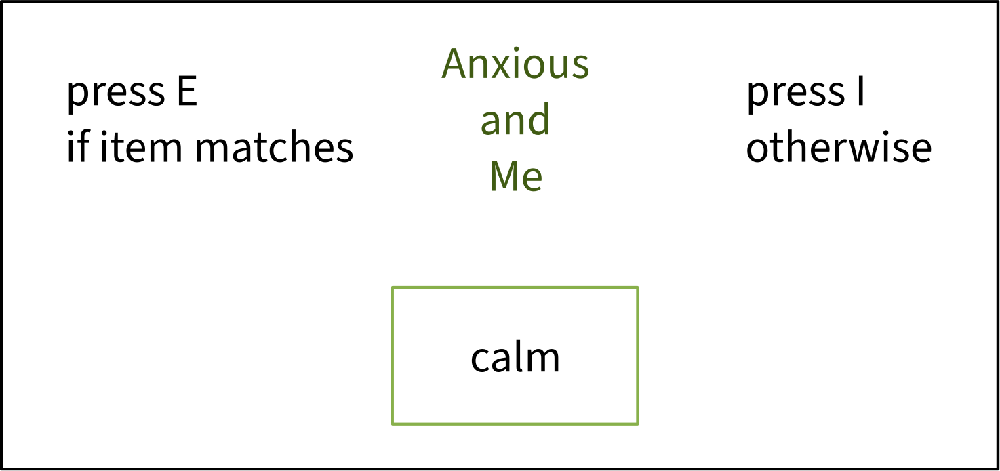
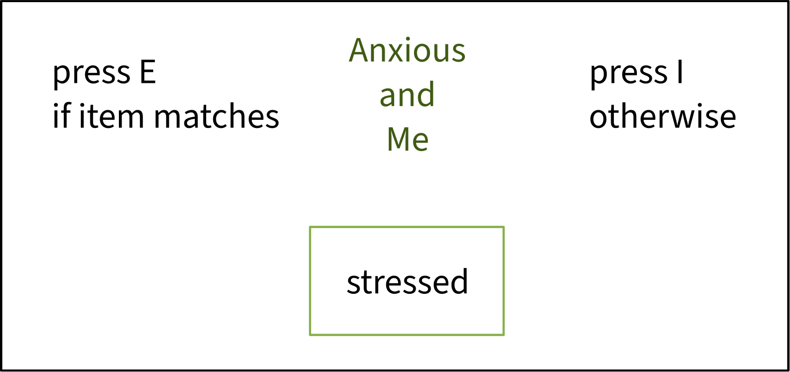
In theory, if you implicitly associate anxiety and yourself, then your reaction times should be faster for the category “anxious and me” (associated) compared to the category, e.g., “anxious and others” (unassociated).
Note: The IAT doesn’t actually work, but the data is structured perfectly to teach you what I want to teach you!
Example data: Log reaction times in the
Implicit Association Test (IAT)

# A tibble: 16 x 4
ppt_id item_id pairing logRT
<chr> <chr> <fct> <dbl>
1 ppt1 item1 Associated 4.33
2 ppt1 item1 Unassociated 4.70
3 ppt2 item1 Associated 4.17
4 ppt2 item1 Unassociated 4.91
5 ppt3 item1 Associated 4.45
6 ppt3 item1 Unassociated 5.13
7 ppt4 item1 Associated 4.41
8 ppt4 item1 Unassociated 6.54
9 ppt5 item1 Associated 5.19
10 ppt5 item1 Unassociated 6.64
11 ppt6 item1 Associated 4.74
12 ppt6 item1 Unassociated 5.96
13 ppt7 item1 Associated 5.23
14 ppt7 item1 Unassociated 5.70
15 ppt8 item1 Associated 4.23
16 ppt8 item1 Unassociated 6.19Side note: Why are we log-transforming
reaction times?
Raw reaction times:


Reaction times in milliseconds have a very skewed distribution, so the assumption of normal distribution of errors is not met. To get around this, we take their logarithm.
Grouping structure
implicit_data contains two grouping variables which contribute non-manipulated / non-controlled / random variability to logRT:
ppt_id: the person who participated in the experiment.
item_id: the word that people categorise (e.g., “calm”, “stressed”, “self”).
Cross-tabulate grouping variables to see how they relate
“Cross-tabulate” is a fancy way to say “count all combinations of”.
This is something that xtabs() from the stats package can do for us.
item_id
ppt_id item1 item10 item11 item12 item13 item14 item15 item16 item17 item18
ppt1 2 2 2 2 2 2 2 2 2 2
ppt10 2 2 2 2 2 2 2 2 2 2
ppt100 2 2 2 2 2 2 2 2 2 2
ppt11 2 2 2 2 2 2 2 2 2 2
ppt12 2 2 2 2 2 2 2 2 2 2
ppt13 2 2 2 2 2 2 2 2 2 2
ppt14 2 2 2 2 2 2 2 2 2 2
ppt15 2 2 2 2 2 2 2 2 2 2
ppt16 2 2 2 2 2 2 2 2 2 2
ppt17 2 2 2 2 2 2 2 2 2 2
ppt18 2 2 2 2 2 2 2 2 2 2
ppt19 2 2 2 2 2 2 2 2 2 2
ppt2 2 2 2 2 2 2 2 2 2 2
ppt20 2 2 2 2 2 2 2 2 2 2
ppt21 2 2 2 2 2 2 2 2 2 2
ppt22 2 2 2 2 2 2 2 2 2 2
ppt23 2 2 2 2 2 2 2 2 2 2
ppt24 2 2 2 2 2 2 2 2 2 2
ppt25 2 2 2 2 2 2 2 2 2 2
ppt26 2 2 2 2 2 2 2 2 2 2
ppt27 2 2 2 2 2 2 2 2 2 2
ppt28 2 2 2 2 2 2 2 2 2 2
ppt29 2 2 2 2 2 2 2 2 2 2
ppt3 2 2 2 2 2 2 2 2 2 2
ppt30 2 2 2 2 2 2 2 2 2 2
ppt31 2 2 2 2 2 2 2 2 2 2
ppt32 2 2 2 2 2 2 2 2 2 2
ppt33 2 2 2 2 2 2 2 2 2 2
ppt34 2 2 2 2 2 2 2 2 2 2
ppt35 2 2 2 2 2 2 2 2 2 2
ppt36 2 2 2 2 2 2 2 2 2 2
ppt37 2 2 2 2 2 2 2 2 2 2
ppt38 2 2 2 2 2 2 2 2 2 2
ppt39 2 2 2 2 2 2 2 2 2 2
ppt4 2 2 2 2 2 2 2 2 2 2
ppt40 2 2 2 2 2 2 2 2 2 2
ppt41 2 2 2 2 2 2 2 2 2 2
ppt42 2 2 2 2 2 2 2 2 2 2
ppt43 2 2 2 2 2 2 2 2 2 2
ppt44 2 2 2 2 2 2 2 2 2 2
ppt45 2 2 2 2 2 2 2 2 2 2
ppt46 2 2 2 2 2 2 2 2 2 2
ppt47 2 2 2 2 2 2 2 2 2 2
ppt48 2 2 2 2 2 2 2 2 2 2
ppt49 2 2 2 2 2 2 2 2 2 2
ppt5 2 2 2 2 2 2 2 2 2 2
ppt50 2 2 2 2 2 2 2 2 2 2
ppt51 2 2 2 2 2 2 2 2 2 2
ppt52 2 2 2 2 2 2 2 2 2 2
ppt53 2 2 2 2 2 2 2 2 2 2
ppt54 2 2 2 2 2 2 2 2 2 2
ppt55 2 2 2 2 2 2 2 2 2 2
ppt56 2 2 2 2 2 2 2 2 2 2
ppt57 2 2 2 2 2 2 2 2 2 2
ppt58 2 2 2 2 2 2 2 2 2 2
ppt59 2 2 2 2 2 2 2 2 2 2
ppt6 2 2 2 2 2 2 2 2 2 2
ppt60 2 2 2 2 2 2 2 2 2 2
ppt61 2 2 2 2 2 2 2 2 2 2
ppt62 2 2 2 2 2 2 2 2 2 2
ppt63 2 2 2 2 2 2 2 2 2 2
ppt64 2 2 2 2 2 2 2 2 2 2
ppt65 2 2 2 2 2 2 2 2 2 2
ppt66 2 2 2 2 2 2 2 2 2 2
ppt67 2 2 2 2 2 2 2 2 2 2
ppt68 2 2 2 2 2 2 2 2 2 2
ppt69 2 2 2 2 2 2 2 2 2 2
ppt7 2 2 2 2 2 2 2 2 2 2
ppt70 2 2 2 2 2 2 2 2 2 2
ppt71 2 2 2 2 2 2 2 2 2 2
ppt72 2 2 2 2 2 2 2 2 2 2
ppt73 2 2 2 2 2 2 2 2 2 2
ppt74 2 2 2 2 2 2 2 2 2 2
ppt75 2 2 2 2 2 2 2 2 2 2
ppt76 2 2 2 2 2 2 2 2 2 2
ppt77 2 2 2 2 2 2 2 2 2 2
ppt78 2 2 2 2 2 2 2 2 2 2
ppt79 2 2 2 2 2 2 2 2 2 2
ppt8 2 2 2 2 2 2 2 2 2 2
ppt80 2 2 2 2 2 2 2 2 2 2
ppt81 2 2 2 2 2 2 2 2 2 2
ppt82 2 2 2 2 2 2 2 2 2 2
ppt83 2 2 2 2 2 2 2 2 2 2
ppt84 2 2 2 2 2 2 2 2 2 2
ppt85 2 2 2 2 2 2 2 2 2 2
ppt86 2 2 2 2 2 2 2 2 2 2
ppt87 2 2 2 2 2 2 2 2 2 2
ppt88 2 2 2 2 2 2 2 2 2 2
ppt89 2 2 2 2 2 2 2 2 2 2
ppt9 2 2 2 2 2 2 2 2 2 2
ppt90 2 2 2 2 2 2 2 2 2 2
ppt91 2 2 2 2 2 2 2 2 2 2
ppt92 2 2 2 2 2 2 2 2 2 2
ppt93 2 2 2 2 2 2 2 2 2 2
ppt94 2 2 2 2 2 2 2 2 2 2
ppt95 2 2 2 2 2 2 2 2 2 2
ppt96 2 2 2 2 2 2 2 2 2 2
ppt97 2 2 2 2 2 2 2 2 2 2
ppt98 2 2 2 2 2 2 2 2 2 2
ppt99 2 2 2 2 2 2 2 2 2 2
item_id
ppt_id item19 item2 item20 item21 item22 item23 item24 item25 item26 item27
ppt1 2 2 2 2 2 2 2 2 2 2
ppt10 2 2 2 2 2 2 2 2 2 2
ppt100 2 2 2 2 2 2 2 2 2 2
ppt11 2 2 2 2 2 2 2 2 2 2
ppt12 2 2 2 2 2 2 2 2 2 2
ppt13 2 2 2 2 2 2 2 2 2 2
ppt14 2 2 2 2 2 2 2 2 2 2
ppt15 2 2 2 2 2 2 2 2 2 2
ppt16 2 2 2 2 2 2 2 2 2 2
ppt17 2 2 2 2 2 2 2 2 2 2
ppt18 2 2 2 2 2 2 2 2 2 2
ppt19 2 2 2 2 2 2 2 2 2 2
ppt2 2 2 2 2 2 2 2 2 2 2
ppt20 2 2 2 2 2 2 2 2 2 2
ppt21 2 2 2 2 2 2 2 2 2 2
ppt22 2 2 2 2 2 2 2 2 2 2
ppt23 2 2 2 2 2 2 2 2 2 2
ppt24 2 2 2 2 2 2 2 2 2 2
ppt25 2 2 2 2 2 2 2 2 2 2
ppt26 2 2 2 2 2 2 2 2 2 2
ppt27 2 2 2 2 2 2 2 2 2 2
ppt28 2 2 2 2 2 2 2 2 2 2
ppt29 2 2 2 2 2 2 2 2 2 2
ppt3 2 2 2 2 2 2 2 2 2 2
ppt30 2 2 2 2 2 2 2 2 2 2
ppt31 2 2 2 2 2 2 2 2 2 2
ppt32 2 2 2 2 2 2 2 2 2 2
ppt33 2 2 2 2 2 2 2 2 2 2
ppt34 2 2 2 2 2 2 2 2 2 2
ppt35 2 2 2 2 2 2 2 2 2 2
ppt36 2 2 2 2 2 2 2 2 2 2
ppt37 2 2 2 2 2 2 2 2 2 2
ppt38 2 2 2 2 2 2 2 2 2 2
ppt39 2 2 2 2 2 2 2 2 2 2
ppt4 2 2 2 2 2 2 2 2 2 2
ppt40 2 2 2 2 2 2 2 2 2 2
ppt41 2 2 2 2 2 2 2 2 2 2
ppt42 2 2 2 2 2 2 2 2 2 2
ppt43 2 2 2 2 2 2 2 2 2 2
ppt44 2 2 2 2 2 2 2 2 2 2
ppt45 2 2 2 2 2 2 2 2 2 2
ppt46 2 2 2 2 2 2 2 2 2 2
ppt47 2 2 2 2 2 2 2 2 2 2
ppt48 2 2 2 2 2 2 2 2 2 2
ppt49 2 2 2 2 2 2 2 2 2 2
ppt5 2 2 2 2 2 2 2 2 2 2
ppt50 2 2 2 2 2 2 2 2 2 2
ppt51 2 2 2 2 2 2 2 2 2 2
ppt52 2 2 2 2 2 2 2 2 2 2
ppt53 2 2 2 2 2 2 2 2 2 2
ppt54 2 2 2 2 2 2 2 2 2 2
ppt55 2 2 2 2 2 2 2 2 2 2
ppt56 2 2 2 2 2 2 2 2 2 2
ppt57 2 2 2 2 2 2 2 2 2 2
ppt58 2 2 2 2 2 2 2 2 2 2
ppt59 2 2 2 2 2 2 2 2 2 2
ppt6 2 2 2 2 2 2 2 2 2 2
ppt60 2 2 2 2 2 2 2 2 2 2
ppt61 2 2 2 2 2 2 2 2 2 2
ppt62 2 2 2 2 2 2 2 2 2 2
ppt63 2 2 2 2 2 2 2 2 2 2
ppt64 2 2 2 2 2 2 2 2 2 2
ppt65 2 2 2 2 2 2 2 2 2 2
ppt66 2 2 2 2 2 2 2 2 2 2
ppt67 2 2 2 2 2 2 2 2 2 2
ppt68 2 2 2 2 2 2 2 2 2 2
ppt69 2 2 2 2 2 2 2 2 2 2
ppt7 2 2 2 2 2 2 2 2 2 2
ppt70 2 2 2 2 2 2 2 2 2 2
ppt71 2 2 2 2 2 2 2 2 2 2
ppt72 2 2 2 2 2 2 2 2 2 2
ppt73 2 2 2 2 2 2 2 2 2 2
ppt74 2 2 2 2 2 2 2 2 2 2
ppt75 2 2 2 2 2 2 2 2 2 2
ppt76 2 2 2 2 2 2 2 2 2 2
ppt77 2 2 2 2 2 2 2 2 2 2
ppt78 2 2 2 2 2 2 2 2 2 2
ppt79 2 2 2 2 2 2 2 2 2 2
ppt8 2 2 2 2 2 2 2 2 2 2
ppt80 2 2 2 2 2 2 2 2 2 2
ppt81 2 2 2 2 2 2 2 2 2 2
ppt82 2 2 2 2 2 2 2 2 2 2
ppt83 2 2 2 2 2 2 2 2 2 2
ppt84 2 2 2 2 2 2 2 2 2 2
ppt85 2 2 2 2 2 2 2 2 2 2
ppt86 2 2 2 2 2 2 2 2 2 2
ppt87 2 2 2 2 2 2 2 2 2 2
ppt88 2 2 2 2 2 2 2 2 2 2
ppt89 2 2 2 2 2 2 2 2 2 2
ppt9 2 2 2 2 2 2 2 2 2 2
ppt90 2 2 2 2 2 2 2 2 2 2
ppt91 2 2 2 2 2 2 2 2 2 2
ppt92 2 2 2 2 2 2 2 2 2 2
ppt93 2 2 2 2 2 2 2 2 2 2
ppt94 2 2 2 2 2 2 2 2 2 2
ppt95 2 2 2 2 2 2 2 2 2 2
ppt96 2 2 2 2 2 2 2 2 2 2
ppt97 2 2 2 2 2 2 2 2 2 2
ppt98 2 2 2 2 2 2 2 2 2 2
ppt99 2 2 2 2 2 2 2 2 2 2
item_id
ppt_id item28 item29 item3 item30 item31 item32 item4 item5 item6 item7 item8
ppt1 2 2 2 2 2 2 2 2 2 2 2
ppt10 2 2 2 2 2 2 2 2 2 2 2
ppt100 2 2 2 2 2 2 2 2 2 2 2
ppt11 2 2 2 2 2 2 2 2 2 2 2
ppt12 2 2 2 2 2 2 2 2 2 2 2
ppt13 2 2 2 2 2 2 2 2 2 2 2
ppt14 2 2 2 2 2 2 2 2 2 2 2
ppt15 2 2 2 2 2 2 2 2 2 2 2
ppt16 2 2 2 2 2 2 2 2 2 2 2
ppt17 2 2 2 2 2 2 2 2 2 2 2
ppt18 2 2 2 2 2 2 2 2 2 2 2
ppt19 2 2 2 2 2 2 2 2 2 2 2
ppt2 2 2 2 2 2 2 2 2 2 2 2
ppt20 2 2 2 2 2 2 2 2 2 2 2
ppt21 2 2 2 2 2 2 2 2 2 2 2
ppt22 2 2 2 2 2 2 2 2 2 2 2
ppt23 2 2 2 2 2 2 2 2 2 2 2
ppt24 2 2 2 2 2 2 2 2 2 2 2
ppt25 2 2 2 2 2 2 2 2 2 2 2
ppt26 2 2 2 2 2 2 2 2 2 2 2
ppt27 2 2 2 2 2 2 2 2 2 2 2
ppt28 2 2 2 2 2 2 2 2 2 2 2
ppt29 2 2 2 2 2 2 2 2 2 2 2
ppt3 2 2 2 2 2 2 2 2 2 2 2
ppt30 2 2 2 2 2 2 2 2 2 2 2
ppt31 2 2 2 2 2 2 2 2 2 2 2
ppt32 2 2 2 2 2 2 2 2 2 2 2
ppt33 2 2 2 2 2 2 2 2 2 2 2
ppt34 2 2 2 2 2 2 2 2 2 2 2
ppt35 2 2 2 2 2 2 2 2 2 2 2
ppt36 2 2 2 2 2 2 2 2 2 2 2
ppt37 2 2 2 2 2 2 2 2 2 2 2
ppt38 2 2 2 2 2 2 2 2 2 2 2
ppt39 2 2 2 2 2 2 2 2 2 2 2
ppt4 2 2 2 2 2 2 2 2 2 2 2
ppt40 2 2 2 2 2 2 2 2 2 2 2
ppt41 2 2 2 2 2 2 2 2 2 2 2
ppt42 2 2 2 2 2 2 2 2 2 2 2
ppt43 2 2 2 2 2 2 2 2 2 2 2
ppt44 2 2 2 2 2 2 2 2 2 2 2
ppt45 2 2 2 2 2 2 2 2 2 2 2
ppt46 2 2 2 2 2 2 2 2 2 2 2
ppt47 2 2 2 2 2 2 2 2 2 2 2
ppt48 2 2 2 2 2 2 2 2 2 2 2
ppt49 2 2 2 2 2 2 2 2 2 2 2
ppt5 2 2 2 2 2 2 2 2 2 2 2
ppt50 2 2 2 2 2 2 2 2 2 2 2
ppt51 2 2 2 2 2 2 2 2 2 2 2
ppt52 2 2 2 2 2 2 2 2 2 2 2
ppt53 2 2 2 2 2 2 2 2 2 2 2
ppt54 2 2 2 2 2 2 2 2 2 2 2
ppt55 2 2 2 2 2 2 2 2 2 2 2
ppt56 2 2 2 2 2 2 2 2 2 2 2
ppt57 2 2 2 2 2 2 2 2 2 2 2
ppt58 2 2 2 2 2 2 2 2 2 2 2
ppt59 2 2 2 2 2 2 2 2 2 2 2
ppt6 2 2 2 2 2 2 2 2 2 2 2
ppt60 2 2 2 2 2 2 2 2 2 2 2
ppt61 2 2 2 2 2 2 2 2 2 2 2
ppt62 2 2 2 2 2 2 2 2 2 2 2
ppt63 2 2 2 2 2 2 2 2 2 2 2
ppt64 2 2 2 2 2 2 2 2 2 2 2
ppt65 2 2 2 2 2 2 2 2 2 2 2
ppt66 2 2 2 2 2 2 2 2 2 2 2
ppt67 2 2 2 2 2 2 2 2 2 2 2
ppt68 2 2 2 2 2 2 2 2 2 2 2
ppt69 2 2 2 2 2 2 2 2 2 2 2
ppt7 2 2 2 2 2 2 2 2 2 2 2
ppt70 2 2 2 2 2 2 2 2 2 2 2
ppt71 2 2 2 2 2 2 2 2 2 2 2
ppt72 2 2 2 2 2 2 2 2 2 2 2
ppt73 2 2 2 2 2 2 2 2 2 2 2
ppt74 2 2 2 2 2 2 2 2 2 2 2
ppt75 2 2 2 2 2 2 2 2 2 2 2
ppt76 2 2 2 2 2 2 2 2 2 2 2
ppt77 2 2 2 2 2 2 2 2 2 2 2
ppt78 2 2 2 2 2 2 2 2 2 2 2
ppt79 2 2 2 2 2 2 2 2 2 2 2
ppt8 2 2 2 2 2 2 2 2 2 2 2
ppt80 2 2 2 2 2 2 2 2 2 2 2
ppt81 2 2 2 2 2 2 2 2 2 2 2
ppt82 2 2 2 2 2 2 2 2 2 2 2
ppt83 2 2 2 2 2 2 2 2 2 2 2
ppt84 2 2 2 2 2 2 2 2 2 2 2
ppt85 2 2 2 2 2 2 2 2 2 2 2
ppt86 2 2 2 2 2 2 2 2 2 2 2
ppt87 2 2 2 2 2 2 2 2 2 2 2
ppt88 2 2 2 2 2 2 2 2 2 2 2
ppt89 2 2 2 2 2 2 2 2 2 2 2
ppt9 2 2 2 2 2 2 2 2 2 2 2
ppt90 2 2 2 2 2 2 2 2 2 2 2
ppt91 2 2 2 2 2 2 2 2 2 2 2
ppt92 2 2 2 2 2 2 2 2 2 2 2
ppt93 2 2 2 2 2 2 2 2 2 2 2
ppt94 2 2 2 2 2 2 2 2 2 2 2
ppt95 2 2 2 2 2 2 2 2 2 2 2
ppt96 2 2 2 2 2 2 2 2 2 2 2
ppt97 2 2 2 2 2 2 2 2 2 2 2
ppt98 2 2 2 2 2 2 2 2 2 2 2
ppt99 2 2 2 2 2 2 2 2 2 2 2
item_id
ppt_id item9
ppt1 2
ppt10 2
ppt100 2
ppt11 2
ppt12 2
ppt13 2
ppt14 2
ppt15 2
ppt16 2
ppt17 2
ppt18 2
ppt19 2
ppt2 2
ppt20 2
ppt21 2
ppt22 2
ppt23 2
ppt24 2
ppt25 2
ppt26 2
ppt27 2
ppt28 2
ppt29 2
ppt3 2
ppt30 2
ppt31 2
ppt32 2
ppt33 2
ppt34 2
ppt35 2
ppt36 2
ppt37 2
ppt38 2
ppt39 2
ppt4 2
ppt40 2
ppt41 2
ppt42 2
ppt43 2
ppt44 2
ppt45 2
ppt46 2
ppt47 2
ppt48 2
ppt49 2
ppt5 2
ppt50 2
ppt51 2
ppt52 2
ppt53 2
ppt54 2
ppt55 2
ppt56 2
ppt57 2
ppt58 2
ppt59 2
ppt6 2
ppt60 2
ppt61 2
ppt62 2
ppt63 2
ppt64 2
ppt65 2
ppt66 2
ppt67 2
ppt68 2
ppt69 2
ppt7 2
ppt70 2
ppt71 2
ppt72 2
ppt73 2
ppt74 2
ppt75 2
ppt76 2
ppt77 2
ppt78 2
ppt79 2
ppt8 2
ppt80 2
ppt81 2
ppt82 2
ppt83 2
ppt84 2
ppt85 2
ppt86 2
ppt87 2
ppt88 2
ppt89 2
ppt9 2
ppt90 2
ppt91 2
ppt92 2
ppt93 2
ppt94 2
ppt95 2
ppt96 2
ppt97 2
ppt98 2
ppt99 2Plot the data for a few individual participants
Code
ppts_to_plot <- c(56, 14, 33, 24, 44, 31, 67, 97, 99)
p_implicit_ppts <- implicit_data |>
mutate(
pairing_num = ifelse(pairing == 'Unassociated', 0, 1)
) |>
filter(ppt_id %in% paste0('ppt', ppts_to_plot)) |>
ggplot(aes(x = pairing_num, y = logRT)) +
geom_jitter(alpha = 0.2, width = 0.1, size = 3) +
stat_summary(fun = mean, geom = 'point', size = 5) +
stat_summary(aes(group = ppt_id), fun = mean, geom = 'line') +
facet_wrap(~ ppt_id) +
scale_x_continuous(breaks = c(0, 1), limits = c(-0.3, 1.3), labels = c('Unassoc.', 'Assoc.')) +
labs(x = 'Topic pairing') +
theme(
strip.background = element_blank(),
panel.border = element_rect(linewidth = 1),
panel.grid = element_blank()
)
p_implicit_ppts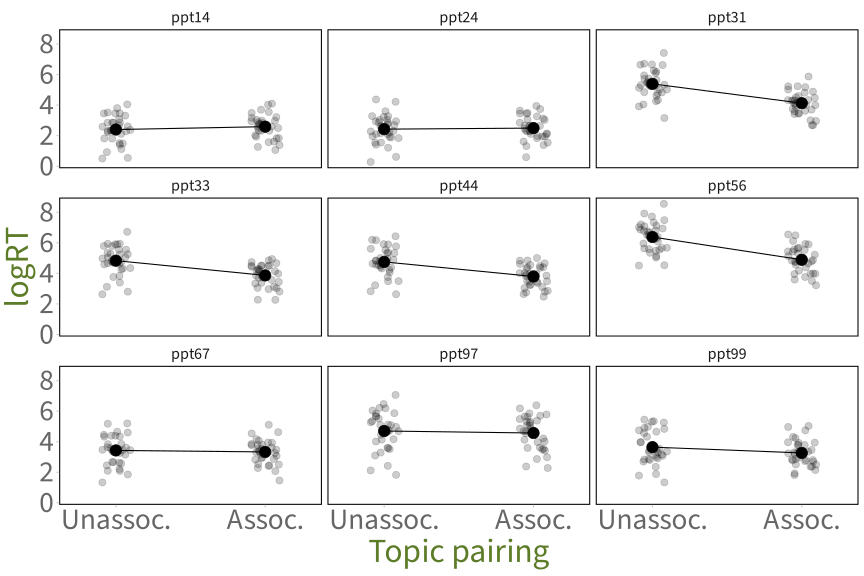
Plot the data for a few individual items
Code
items_to_plot <- c(1, 2, 4, 13, 6, 8, 14, 27, 32)
p_implicit_items <- implicit_data |>
mutate(
pairing_num = ifelse(pairing == 'Unassociated', 0, 1)
) |>
filter(item_id %in% paste0('item', items_to_plot)) |>
ggplot(aes(x = pairing_num, y = logRT)) +
geom_jitter(alpha = 0.1, width = 0.1, size = 3) +
stat_summary(fun = mean, geom = 'point', size = 5) +
stat_summary(aes(group = item_id), fun = mean, geom = 'line') +
facet_wrap(~ item_id) +
scale_x_continuous(breaks = c(0, 1), limits = c(-0.3, 1.3), labels = c('Unassoc.', 'Assoc.')) +
labs(x = 'Topic pairing') +
theme(
strip.background = element_blank(),
panel.border = element_rect(linewidth = 1),
panel.grid = element_blank()
)
p_implicit_items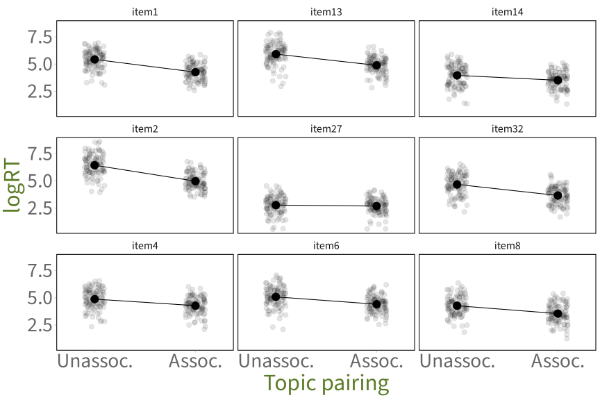
How do we tell a model that particpants and items don’t all perform the same?
In this lecture, we will work our way toward the answer step by step.
We’ll start with how not to model this data, each time getting closer to how we will end up modelling it.
The first wrong way to model this data
The first wrong way to model this data:
Ignore groups and fit a simple LM
Call:
lm(formula = logRT ~ pairing, data = implicit_data)
Residuals:
Min 1Q Median 3Q Max
-4.491 -0.746 0.057 0.787 3.849
Coefficients:
Estimate Std. Error t value Pr(>|t|)
(Intercept) 4.7713 0.0201 237.6 <2e-16 ***
pairingAssociated -0.7624 0.0284 -26.8 <2e-16 ***
---
Signif. codes: 0 '***' 0.001 '**' 0.01 '*' 0.05 '.' 0.1 ' ' 1
Residual standard error: 1.14 on 6398 degrees of freedom
Multiple R-squared: 0.101, Adjusted R-squared: 0.101
F-statistic: 721 on 1 and 6398 DF, p-value: <2e-16The simple LM has no way of knowing that different participants behave differently
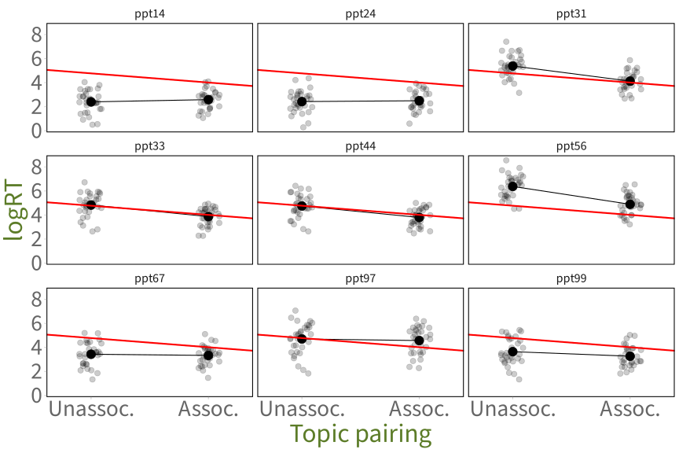
The red line is the line estimated by the simple LM: intercept = 4.77, slope = –0.76.
The second wrong way to model this data
The second wrong way to model this data:
Fit a different simple LM for each participant
Call: lme4::lmList(formula = logRT ~ pairing | ppt_id, data = implicit_data)
Coefficients:
(Intercept) pairingAssociated
ppt1 4.52 -0.4975
ppt10 5.00 -0.6156
ppt100 4.54 -0.4258
ppt11 6.05 -1.4670
ppt12 5.12 -1.1092
ppt13 4.22 -0.5637
ppt14 2.40 0.1862
ppt15 5.40 -0.9155
ppt16 5.33 -0.7545
ppt17 4.32 -0.6686
ppt18 5.05 -1.0397
ppt19 4.99 -1.0473
ppt2 4.68 -0.7775
ppt20 5.25 -0.8680
ppt21 5.47 -1.1557
ppt22 6.02 -0.9153
ppt23 4.86 -0.6823Now we have a different line for each participant
Code
indiv_ppt_coefs <- coef(implicit_lmlist) |>
rownames_to_column(var = 'ppt_id')
p_implicit_ppts +
geom_abline(
data = filter(indiv_ppt_coefs, ppt_id %in% paste0('ppt', ppts_to_plot)),
aes(intercept = `(Intercept)`, slope = pairingAssociated, colour = ppt_id),
linewidth = 1
) +
theme(legend.position = 'none')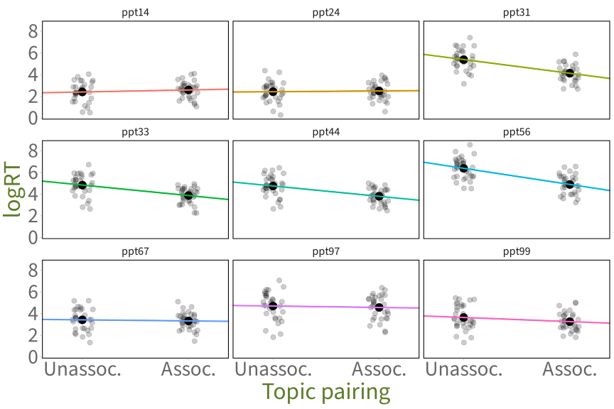
… but these models are still averaging over all the different items and ignoring their variability.
Ways to analyse group-structured data
Fit one simple linear model to the whole dataset
❌
Fit one linear model which
- estimates the average effect across the whole dataset
- also estimates how each participant and each item differ from that average
✅
Fit a different simple linear model to data from each participant or each item
❌
What does it mean for participants/items to differ from the average effect?
Let’s start thinking it through together.
The right way to model this data: A linear mixed model (LMM)
Our first linear mixed model (LMM)
Instead of lm(), we have to use lmer() from the library lme4.
What is (1 | ppt_id)?
- It tells the model to adjust the main intercept estimate for each
ppt_id. - We call it an “intercept adjustment by
ppt_id” or a “random intercept byppt_id”.
Intercept adjustments by ppt_id
(1 | ppt_id) tells the model to estimate how much the average intercept should be nudged up or down, in order to best fit the data from each participant.
We can use ranef() to extract the list of these adjustments:
(Intercept)
ppt1 -0.1190
ppt10 0.2882
ppt100 -0.0651
ppt11 0.9000
ppt12 0.1716
ppt13 -0.4369For example, for ppt1:
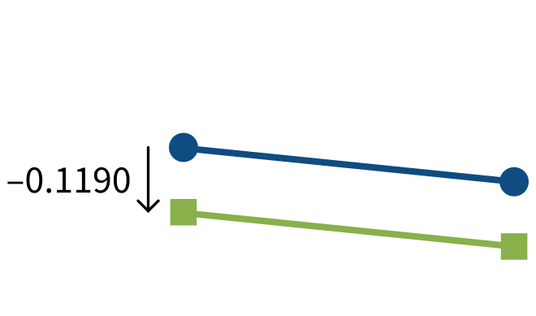
For ppt10:
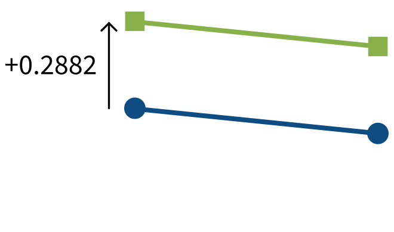
For ppt100:
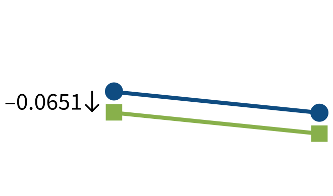
Plot each participant’s intercept adjustments
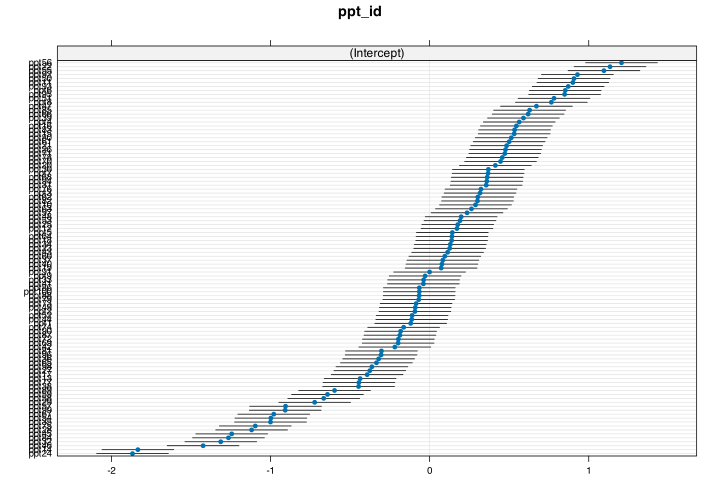
Look at the full LMM summary
Linear mixed model fit by REML ['lmerMod']
Formula: logRT ~ pairing + (1 | ppt_id)
Data: implicit_data
REML criterion at convergence: 17667
Scaled residuals:
Min 1Q Median 3Q Max
-3.438 -0.649 0.042 0.697 3.451
Random effects:
Groups Name Variance Std.Dev.
ppt_id (Intercept) 0.419 0.647
Residual 0.876 0.936
Number of obs: 6400, groups: ppt_id, 100
Fixed effects:
Estimate Std. Error t value
(Intercept) 4.7713 0.0668 71.4
pairingAssociated -0.7624 0.0234 -32.6
Correlation of Fixed Effects:
(Intr)
parngAssctd -0.175New sections in the model summary!
“Random effects:”
- The by-participant adjustments to the intercept (and how variable they are).
- The residuals, that is, how far each participant’s data points are from their adjusted line (and how variable the residuals are).
“Fixed effects:”
- The average intercept and average slope for the whole dataset.
- Also called fixed intercept and fixed slope.
- These are the same \(\beta\) coefficients as always. Same interpretations apply.
How well does the random-intercept model fit each participant’s data?
Code
random_int_coefs <- coef(implicit_lmm_int)$ppt_id |>
rownames_to_column(var = 'ppt_id')
p_implicit_ppts +
geom_abline(
data = filter(random_int_coefs, ppt_id %in% paste0('ppt', ppts_to_plot)),
aes(intercept = `(Intercept)`, slope = pairingAssociated, colour = ppt_id),
linewidth = 1
) +
theme(legend.position = 'none')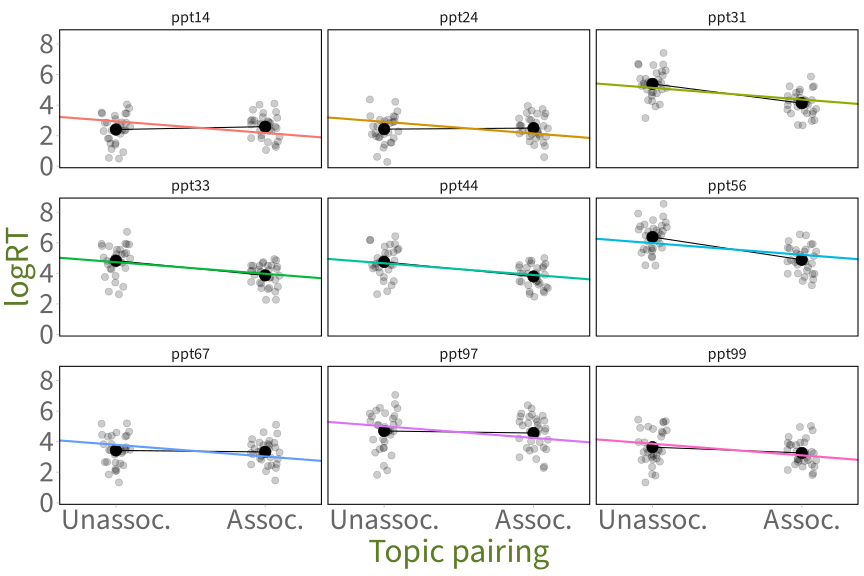
To see each participant’s adjusted parameters, use coef()
(Intercept) pairingAssociated
ppt1 4.65 -0.762
ppt10 5.06 -0.762
ppt100 4.71 -0.762
ppt11 5.67 -0.762
ppt12 4.94 -0.762
ppt13 4.33 -0.762
ppt14 2.94 -0.762
ppt15 5.30 -0.762
ppt16 5.32 -0.762
ppt17 4.38 -0.762
ppt18 4.91 -0.762
ppt19 4.84 -0.762
ppt2 4.68 -0.762
ppt20 5.18 -0.762
ppt21 5.26 -0.762
ppt22 5.91 -0.762Each participant’s line has a different intercept, but they all still have the same slope … for now …
Adding slope adjustments for each participant
Adding slope adjustments for each participant
Let’s think together about what different slope adjustments might look like.
Estimating intercept AND slope adjustments for each participant
(1 + pairing| ppt_id) tells the model to adjust the fixed intercept and the fixed slope over pairing for each ppt_id.
1represents the adjustment to the fixed intercept.+ pairingrepresents the adjustment to the fixed slope overpairing.
Intercept and slope adjustments
When we include (1 + pairing | ppt_id) in the model formula, we tell the model to estimate how much the fixed intercept AND the fixed slope over pairing should be nudged up or down by in order to fit the data from each participant.
Let’s look at the adjustments that the model has estimated:
(Intercept) pairingAssociated
ppt1 -0.171 0.0692
ppt10 0.307 -0.0769
ppt100 -0.120 0.0599
ppt11 1.117 -0.3740
ppt12 0.242 -0.0957
ppt13 -0.523 0.1651For example, for ppt1:
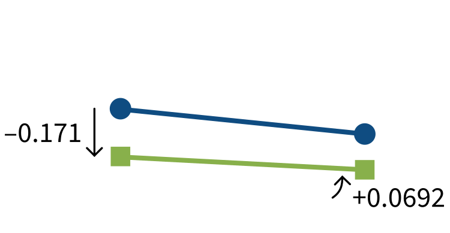
For ppt10:
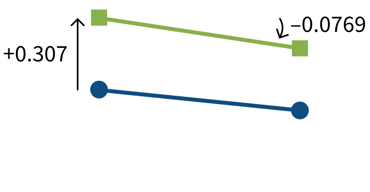
Plot each participant’s intercept and slope adjustments
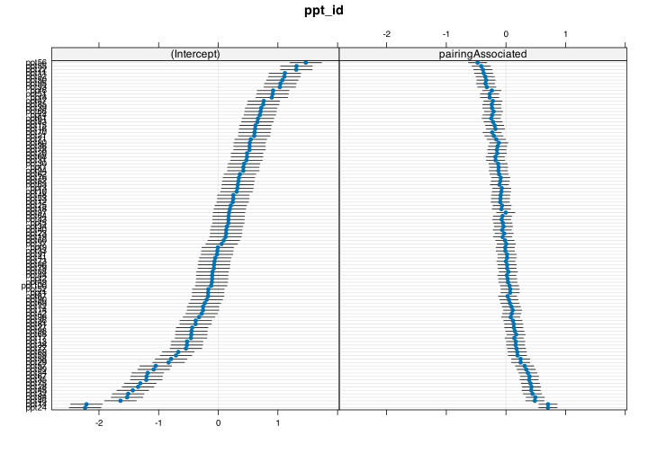
Look at the full LMM summary
Linear mixed model fit by REML ['lmerMod']
Formula: logRT ~ pairing + (1 + pairing | ppt_id)
Data: implicit_data
REML criterion at convergence: 17566
Scaled residuals:
Min 1Q Median 3Q Max
-3.397 -0.655 0.050 0.690 3.385
Random effects:
Groups Name Variance Std.Dev. Corr
ppt_id (Intercept) 0.5885 0.767
pairingAssociated 0.0618 0.249 -0.97
Residual 0.8603 0.928
Number of obs: 6400, groups: ppt_id, 100
Fixed effects:
Estimate Std. Error t value
(Intercept) 4.7713 0.0784 60.8
pairingAssociated -0.7624 0.0340 -22.4
Correlation of Fixed Effects:
(Intr)
parngAssctd -0.794Some new stuff happening in the random effects section!
- Old: The by-participant adjustments to the intercept (and how variable they are).
- New: The by-participant adjustments to the slope over
pairing(and how variable they are). - New: The correlation between intercept adjustments and slope adjustments.
- Old: The residuals, that is, how far each participant’s data points are from their adjusted line (and how variable the residuals are).
To see each participant’s adjusted parameters, use coef()
(Intercept) pairingAssociated
ppt1 4.60 -0.6932
ppt10 5.08 -0.8393
ppt100 4.65 -0.7025
ppt11 5.89 -1.1363
ppt12 5.01 -0.8581
ppt13 4.25 -0.5973
ppt14 2.56 -0.0564
ppt15 5.39 -0.9529
ppt16 5.39 -0.9389
ppt17 4.31 -0.6237
ppt18 4.97 -0.8393
ppt19 4.89 -0.8187
ppt2 4.67 -0.7339
ppt20 5.25 -0.9090
ppt21 5.37 -0.9651
ppt22 6.08 -1.1490Now each participant has their own intercept and their own slope, like before when we fit a single model for each participant.
But unlike before, now we can derive all the lines for each participant from the same model, yay!
How well does the random-intercept and random-slope model fit each participant’s data?
Code
random_int_slp_coefs <- coef(implicit_lmm_int_slp)$ppt_id |>
rownames_to_column(var = 'ppt_id')
p_implicit_ppts +
geom_abline(
data = filter(random_int_slp_coefs, ppt_id %in% paste0('ppt', ppts_to_plot)),
aes(intercept = `(Intercept)`, slope = pairingAssociated, colour = ppt_id),
linewidth = 1
) +
theme(legend.position = 'none')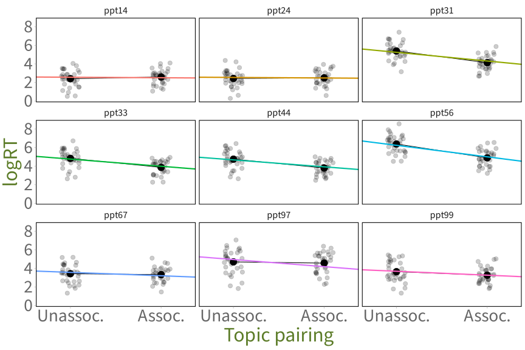
It’s a lot better than the random-intercept-only model!
But still not awesome, because there’s still another source of variability that we haven’t yet modelled…
No adjustments for each item :(
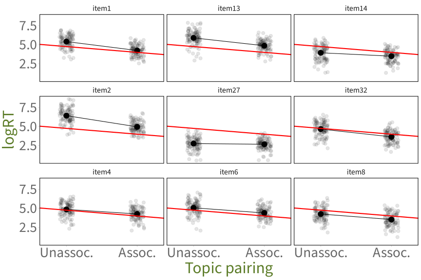
Currently, the model currently averages over all items and imagines that they all pattern exactly the same, because we haven’t told it that each item might also vary.
The red line is the line with the fixed effect parameters: intercept = 4.77, slope = –0.76.
Adding random effects by item
Adding random effects by item
Now we have
- random intercepts (aka intercept adjustments) by
ppt_id - random slopes (aka slope adjustments) over
pairingbyppt_id
and also
- random intercepts (aka intercept adjustments) by
item_id - random slopes (aka slope adjustments) over
pairingbyitem_id
Look at all the adjustments
(Intercept) pairingAssociated
ppt1 -0.229 0.2028
ppt10 0.250 0.0758
ppt100 -0.199 0.2488
ppt11 1.229 -0.5998
ppt12 0.316 -0.2672
ppt13 -0.542 0.1880
ppt14 -2.317 0.8716
ppt15 0.625 -0.1650
ppt16 0.578 -0.0507
ppt17 -0.454 0.1080
ppt18 0.254 -0.2137
ppt19 0.187 -0.2124For example, for ppt1:
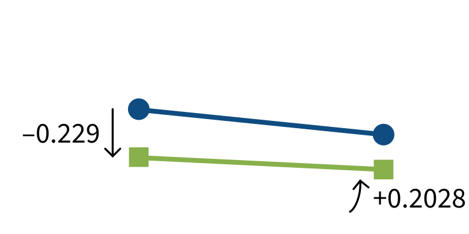
(Intercept) pairingAssociated
item1 0.6479 -0.392
item10 0.2301 0.189
item11 0.3806 0.111
item12 0.3166 -0.147
item13 1.1422 -0.274
item14 -0.8104 0.310
item15 0.0427 0.131
item16 0.4579 -0.178
item17 0.4274 -0.343
item18 -1.2246 0.124
item19 -1.2392 0.477
item2 1.6616 -0.689For example, for item1:
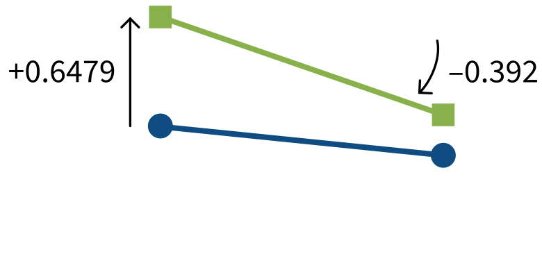
Plot the by-participant intercept and slope adjustments

Plot the by-item intercept and slope adjustments

This model captures by-participant variability
Code
full_llm_ppt_coefs <- coef(implicit_full_lmm)$ppt_id |>
rownames_to_column(var = 'ppt_id')
p_implicit_ppts +
geom_abline(
data = filter(full_llm_ppt_coefs, ppt_id %in% paste0('ppt', ppts_to_plot)),
aes(intercept = `(Intercept)`, slope = pairingAssociated, colour = ppt_id),
linewidth = 1
) +
theme(legend.position = 'none')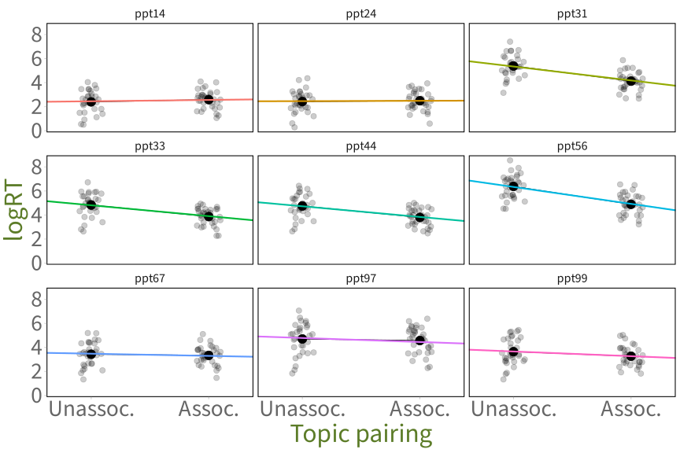
This model also captures by-item variability!
Code
full_llm_item_coefs <- coef(implicit_full_lmm)$item_id |>
rownames_to_column(var = 'item_id')
p_implicit_items +
geom_abline(
data = filter(full_llm_item_coefs, item_id %in% paste0('item', items_to_plot)),
aes(intercept = `(Intercept)`, slope = pairingAssociated, colour = item_id),
linewidth = 1
) +
theme(legend.position = 'none')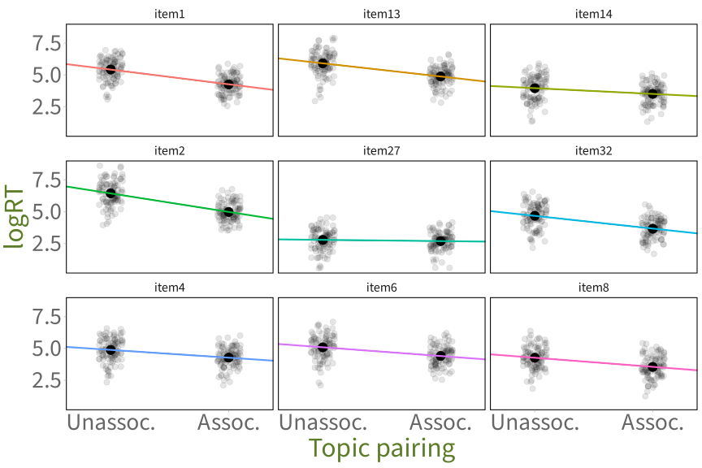
Recap: Intro to linear mixed models (LMMs)
The difference between a simple linear model and a linear mixed model:
- A simple linear model has no random effects.
- A linear mixed model has random effects.
“Random effects”: an umbrella term that refers to both random intercepts and random slopes.
Sometimes we fit LMMs that have only random intercepts, or LMMs that have both random intercepts and random slopes.
- We don’t really ever fit LMMs that have only random slopes.
We are teaching you how to use LMMs because they are the current state of the art for doing inferential statistics in Psychology and adjacent fields (especially for experimental/clinical research.)
Back matter
Learning objectives revisited
What are random intercepts?
- Adjustments to a linear model’s fixed intercept for each level of a grouping variable.
What are random slopes?
- Adjustments to a linear model’s fixed slope for each level of a grouping variable.
What are random effects?
- An umbrella term that covers both “random slope” and “random intercept”.
- In general, a way for models to estimate how much different levels of a grouping variable diverge/deviate from the average effect in the data.
What are fixed effects?
- The main intercept and slope coefficient of a linear mixed model, representing the average coefficient values across the whole dataset.
To do this week
Tasks:
 Work on exercises in labs
Work on exercises in labs
 Complete the weekly quiz
Complete the weekly quiz
Get support:
Consult the flash cards
 Ask questions anonymously on Piazza
Ask questions anonymously on Piazza
 We really like seeing you in office hours!
We really like seeing you in office hours!
Appendix
Wooclap images (1)
Is the participant’s intercept more positive or more negative than the average intercept?
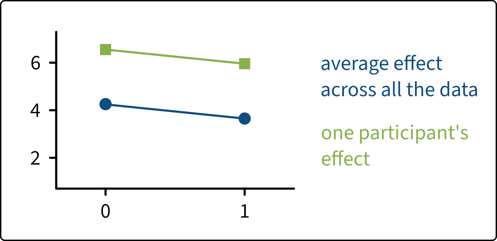
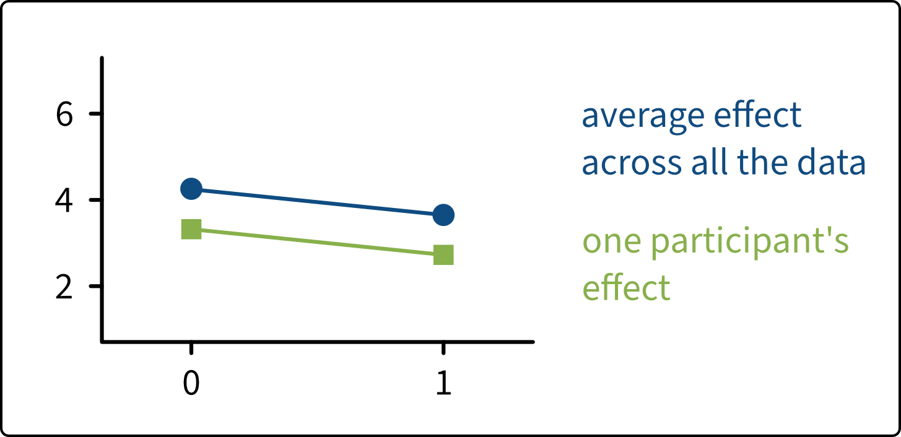
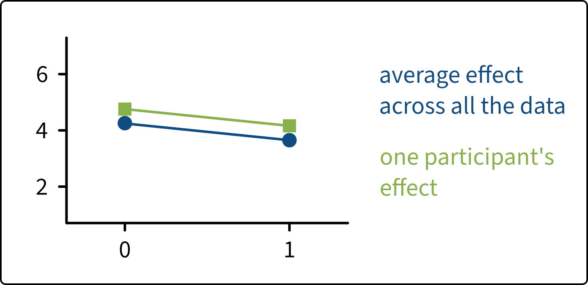
Wooclap images (2)
Is the participant’s slope more positive or more negative than the average slope?
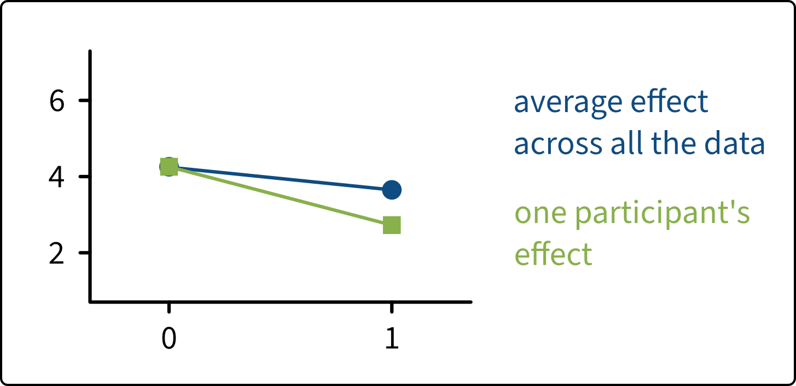
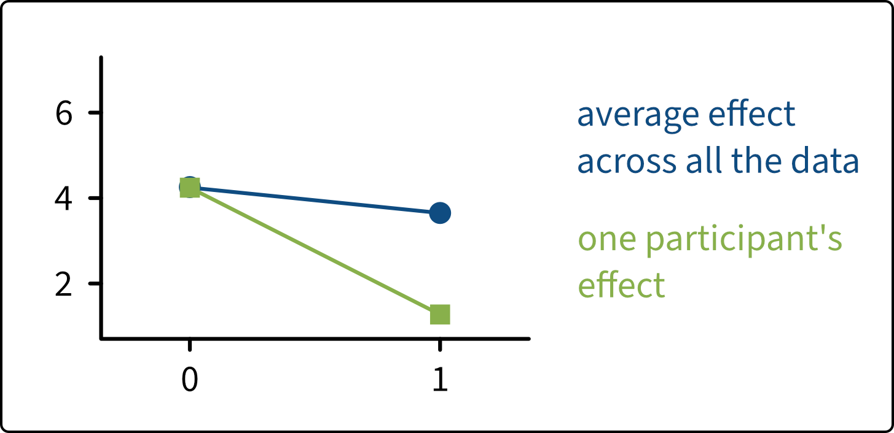
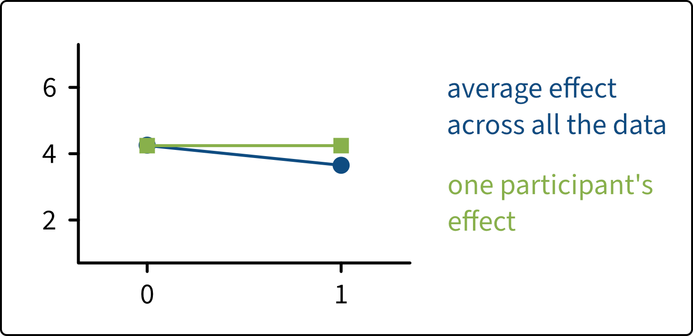
Wooclap images (3)
Are the participant’s intercept and slope each more positive or more negative than the average intercept and slope?
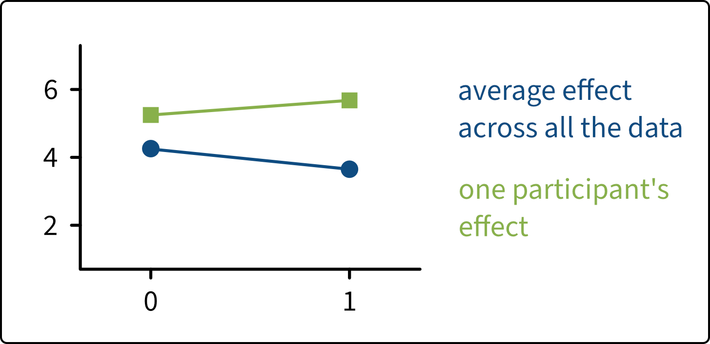
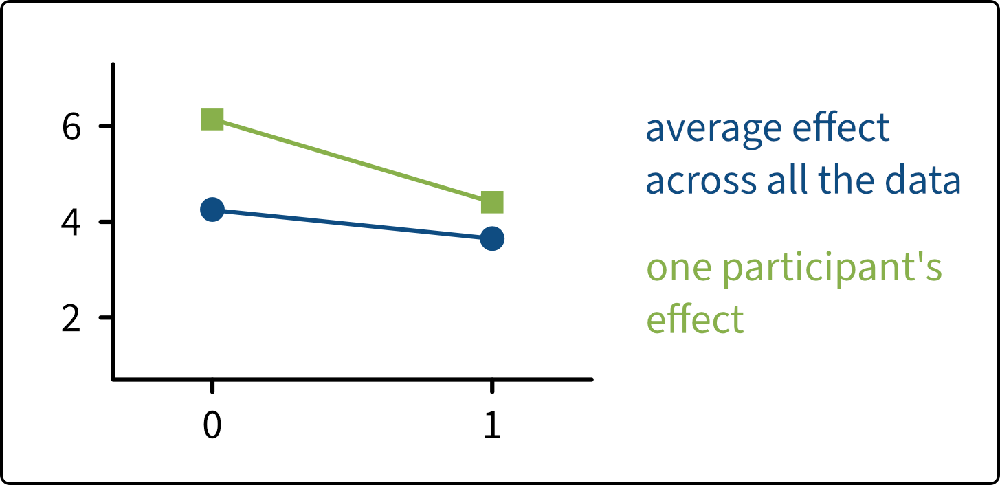
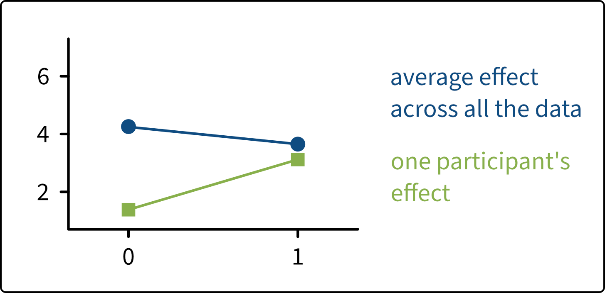